library(dplyr)
## Warning: package 'dplyr' was built under R version 4.4.3
##
## Attaching package: 'dplyr'
## The following objects are masked from 'package:stats':
##
## filter, lag
## The following objects are masked from 'package:base':
##
## intersect, setdiff, setequal, union
library(ggplot2)
## Warning: package 'ggplot2' was built under R version 4.4.3
library(knitr)
## Warning: package 'knitr' was built under R version 4.4.3
library(kableExtra)
##
## Attaching package: 'kableExtra'
## The following object is masked from 'package:dplyr':
##
## group_rows
library(patchwork) # Grafikleri birleştirmek içinİstatistiksel Çıkarım
1 Olasılık Dağılımları Mantığı
İstatistiksel analizlerde verinin “davranış biçimini” anlamak için dağılımları kullanırız. R dilinde her dağılım ailesi (Normal, Binom, vb.) için standartlaşmış 4 temel fonksiyon öneki bulunur.
d(Density - Yoğunluk): Olasılık Yoğunluk Fonksiyonu (PDF). Belirli bir \(x\) noktasındaki eğrinin yüksekliğini verir. (\(P(X=x)\)).p(Probability - Olasılık): Kümülatif Dağılım Fonksiyonu (CDF). Eğrinin sol tarafında kalan alanı (olasılığı) verir. (\(P(X \le x)\)).q(Quantile - Çeyreklik):p’nin tersidir. Belirli bir olasılık (alan) değerine karşılık gelen \(x\) değerini (z-skorunu) verir.r(Random - Rastgele): Belirtilen dağılıma uygun rastgele veri üretir.
1.1 Normal Dağılım (Sürekli Değişkenler)
Normal dağılım, istatistiğin bel kemiğidir. Simetrik, çan eğrisi şeklindedir ve iki parametre ile tanımlanır: Ortalama (\(\mu\)) ve Standart Sapma (\(\sigma\)).
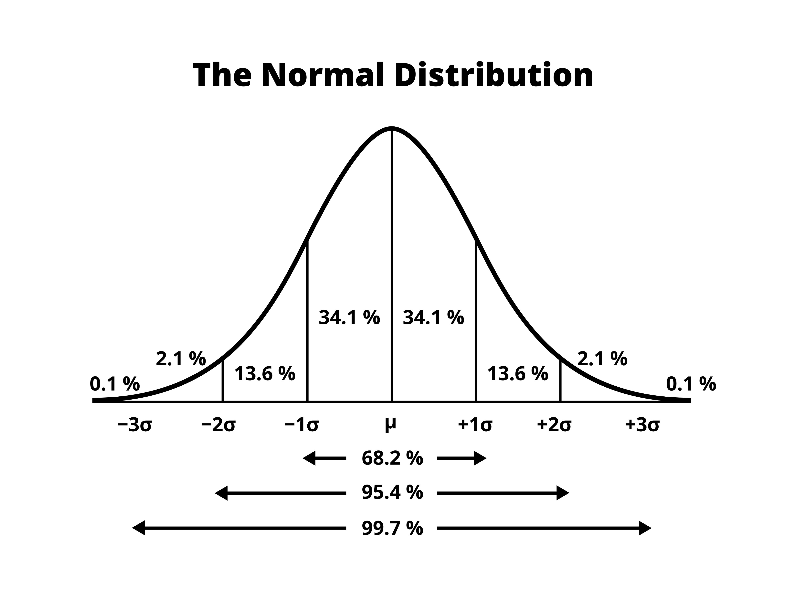
1.1.1 Olasılık ve Yoğunluk Hesaplamaları
1.1.2 Yoğunluk Fonksiyonu (dnorm)
Normal dağılım eğrisini çizmek için kullanılır.
# Veriyi bir data frame (veri çerçevesi) haline getirmeliyiz
df <- data.frame(x = seq(-4, 4, 0.01))
ggplot(df, aes(x = x, y = dnorm(x))) +
# Normal dağılım eğrisi (Mavi, kalın çizgi)
geom_line(color = "blue", linewidth = 1.2) +
# Ortalamayı gösteren dikey çizgi (Kırmızı, kesikli)
geom_vline(xintercept = 0, color = "red", linetype = "dashed", linewidth = 1) +
# Başlık ve etiketler
labs(title = "Standart Normal Dağılım (Ort=0, SS=1)",
y = "Yoğunluk (Density)",
x = "Z Değerleri") +
# Temiz bir görünüm için tema
theme_minimal()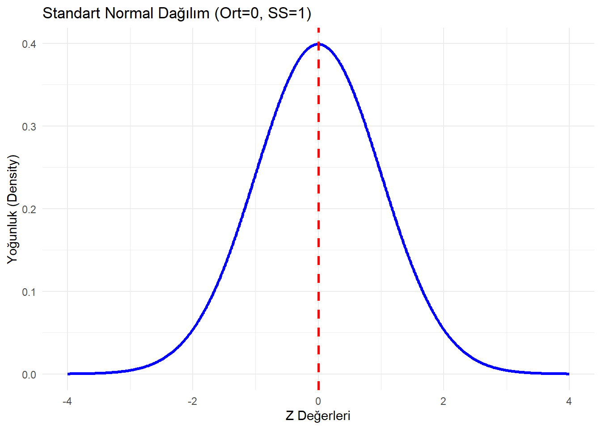
1.1.3 Kümülatif Olasılık (pnorm)
Bir Z değerinin solunda kalan alanı hesaplar.
Soru: Standart normal dağılımda, ortalamanın tam üzerindeki (z=0) bir değerin solunda kalan alan nedir?
pnorm(0)
## [1] 0.5
# Beklenen sonuç 0.5'tir çünkü dağılım simetriktir ve alanın yarısı sol taraftadır.library(ggplot2)
# -4 ile +4 arasında bir x ekseni ve bunlara karşılık gelen yoğunluklar (y)
df <- data.frame(x = seq(-4, 4, 0.01))
df$y <- dnorm(df$x) # Standart normal dağılım yoğunlukları
z_degeri <- -1.645
ggplot(df, aes(x = x, y = y)) +
# 1. Tüm eğriyi çizgi olarak çiz
geom_line(size = 1) +
# 2. Sadece z değerinden küçük olan kısmı (Sol Kuyruk) boya
geom_area(data = subset(df, x < z_degeri),
fill = "#E74C3C", alpha = 0.5) + # Kırmızımsı bir renk
# 3. Z değerinin olduğu yere dikey çizgi at
geom_vline(xintercept = z_degeri, linetype = "dashed") +
# 4. Etiketler ve Başlık
labs(title = paste("Sol Kuyruk Olasılığı (z =", z_degeri, ")"),
subtitle = "Boyalı alan, bu z değerinin solunda kalan kümülatif olasılıktır.",
x = "Z Değeri", y = "Yoğunluk") +
# 5. Z değerini grafiğe yazdıralım
annotate("text", x = z_degeri - 1, y = 0.1,
label = paste("Alan =", round(pnorm(z_degeri), 3)), color = "red") +
theme_minimal()
## Warning: Using `size` aesthetic for lines was deprecated in ggplot2 3.4.0.
## ℹ Please use `linewidth` instead.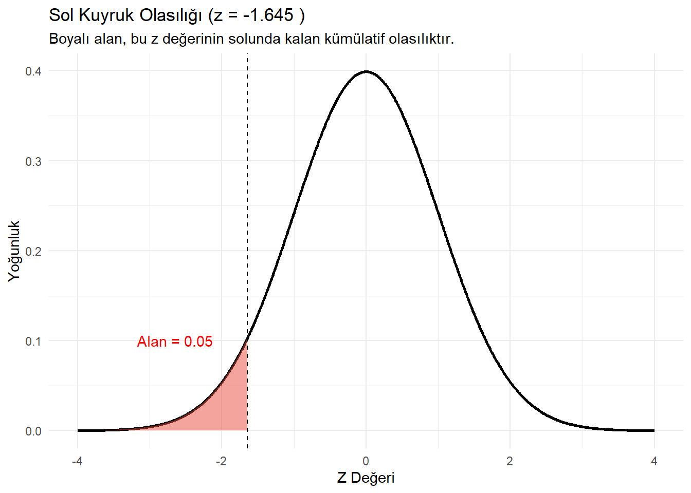
1.1.4 Kritik Değerler ve Güven Aralıkları (qnorm)
Hipotez testlerinde “sınır değerleri” belirlemek için kullanılır. Elimizde bir olasılık (örneğin %97.5) varsa, buna denk gelen Z skoru nedir?
# %95 Güven Aralığı için (iki kuyrukta toplam %5 hata payı, her kuyrukta %2.5)
# Alt sınır (0.025) ve Üst sınır (0.975)
qnorm(c(0.025, 0.975))
## [1] -1.959964 1.959964
# %99 Güven Aralığı için
round(qnorm(c(0.005, 0.995)), 2)
## [1] -2.58 2.581.1.5 Binom Dağılımı (Kesikli Değişkenler)
Sürekli verilerin aksine (boy, kilo, IQ), kesikli olayları (yazı/tura, geçti/kaldı, satın aldı/almadı) modelleriz.
Bir deneyin Binom dağılımı sayılması için:
Deneme sayısı (\(n\)) sabittir.
Her deneme bağımsızdır.
Sadece iki sonuç vardır: Başarı (\(p\)) veya Başarısızlık (\(1-p\)).
Formül:
\[ P(X = k) = \binom{n}{k} \cdot p^k \cdot (1-p)^{n-k} \]
1.1.6 Basit Örnek: Bozuk Para
Bir parayı 2 kez atalım (\(n=2\)). Yazı gelme olasılığı \(p=0.5\). Hiç yazı gelmemesi (0), bir yazı (1) veya iki yazı (2) gelme olasılıkları nedir?
# 1. Önce veriyi bir data frame (veri çerçevesi) haline getirelim
# ggplot2 her zaman data frame ile çalışmayı sever.
df_para <- data.frame(
x = 0:2,
olasiliklar = dbinom(0:2, size = 2, p = 0.5)
)
# 2. Grafik Çizimi
ggplot(df_para, aes(x = x, y = olasiliklar)) +
# A) Çubuklar (Lollipop'un sapı)
# x'ten x'e, 0'dan olasılık değerine çizgi çekiyoruz
geom_segment(aes(x = x, xend = x, y = 0, yend = olasiliklar),
color = "red", size = 1.5) +
# B) Noktalar (Lollipop'un şekeri)
geom_point(color = "red", size = 5) +
# C) Eksen Ayarları
# X ekseninde sadece tam sayıların (0, 1, 2) görünmesini sağlayalım
scale_x_continuous(breaks = 0:2) +
# D) Etiketler ve Başlık
labs(title = "Bozuk Parayı 2 Kez Atma",
subtitle = "Binom Dağılımı (n=2, p=0.5)",
x = "Yazı Gelme Sayısı (k)",
y = "Olasılık") +
# E) Tema
theme_minimal() +
# İsteğe bağlı: Y ekseninin 0'dan başladığını netleştirmek için
expand_limits(y = 0)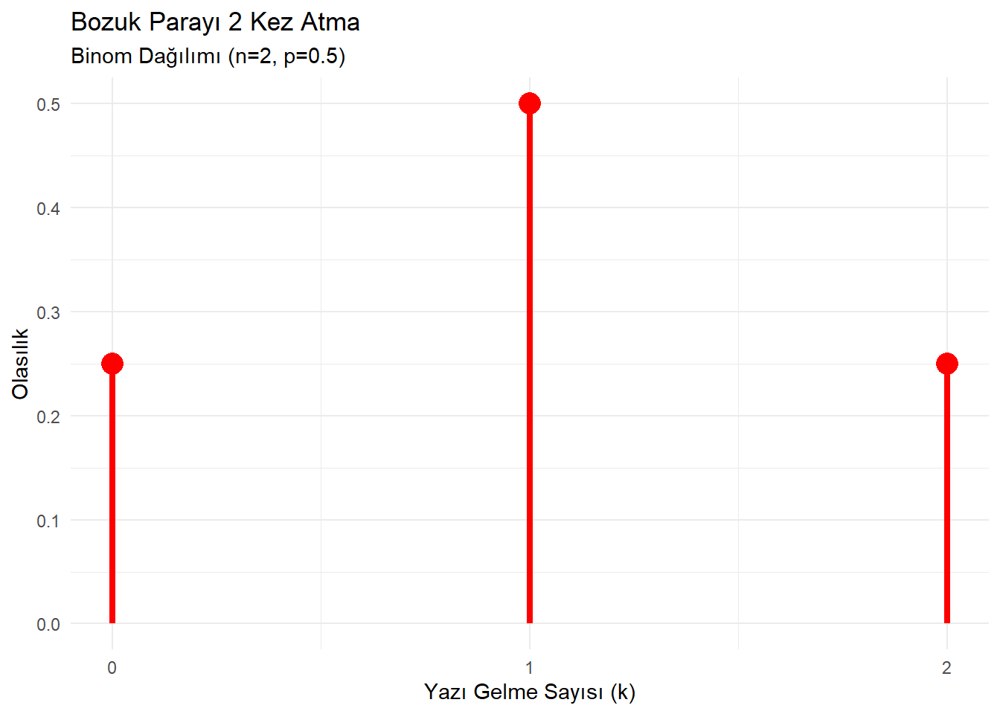
P(X=0): 0.25 (Tura-Tura)
P(X=1): 0.50 (Yazı-Tura veya Tura-Yazı)
P(X=2): 0.25 (Yazı-Yazı)
1.2 Genişletilmiş Örnek: n=30
Deneme sayısını artırdığımızda, kesikli olan Binom dağılımının şeklinin Normal dağılıma (çan eğrisi) benzemeye başladığını görürüz.
df_para <- data.frame(
x = 0:30,
olasiliklar = dbinom(0:30, size = 30, p = 0.5)
)
# 2. Grafik Çizimi
ggplot(df_para, aes(x = x, y = olasiliklar)) +
# A) Çubuklar (Lollipop'un sapı)
# x'ten x'e, 0'dan olasılık değerine çizgi çekiyoruz
geom_segment(aes(x = x, xend = x, y = 0, yend = olasiliklar),
color = "red", size = 1.5) +
# B) Noktalar (Lollipop'un şekeri)
geom_point(color = "red", size = 5) +
# C) Eksen Ayarları
# X ekseninde sadece tam sayıların (0, 1, 2) görünmesini sağlayalım
scale_x_continuous(breaks = 0:2) +
# D) Etiketler ve Başlık
labs(title = "Bozuk Parayı 2 Kez Atma",
subtitle = "Binom Dağılımı (n=2, p=0.5)",
x = "Yazı Gelme Sayısı (k)",
y = "Olasılık") +
# E) Tema
theme_minimal() +
# İsteğe bağlı: Y ekseninin 0'dan başladığını netleştirmek için
expand_limits(y = 0)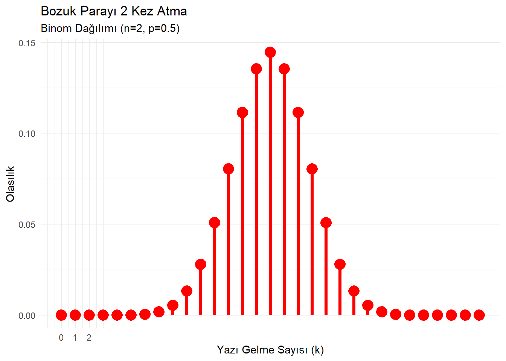
30 soruluk bir doğru/yanlış testini rastgele dolduran bir öğrencinin tam 15 doğru yapma olasılığı nedir?
# n=30, p=0.5, k=15 dbinom(x = 15, size = 30, prob = 0.5) ## [1] 0.1444644İyileşme şansı %50 olan bir ilacı 30 hastaya verirsek, 20 kişinin iyileşme olasılığı nedir?
# n=30, p=0.5, k=20 dbinom(x = 20, size = 30, prob = 0.5) ## [1] 0.0279816
2 Merkezi Limit Teoremi ve Örnekleme Dağılımı
İstatistiğin “sihirli” kısmıdır. Teorem özetle şunu der:
“Popülasyonun dağılımı ne olursa olsun (Normal, Uniform, Çarpık vb.), eğer yeterince büyük örneklemler (\(n \ge 30\)) çeker ve bunların ortalamasını alırsanız, bu ortalamaların dağılımı Normal Dağılım gösterir.”
Bunu kanıtlamak için Normal Dağılmayan (örneğin Uniform/Düz) bir popülasyonla çalışalım ve ortalamaların nasıl normale döndüğünü görelim.
Aşağıdaki kodda, 0 ile 100 arasında rastgele sayıların olduğu (Düz/Uniform) bir evrenden örneklemler çekiyoruz.
# 1. Gerekli kütüphaneleri yükle
library(ggplot2)
library(dplyr)
library(tidyr) # Veri düzenlemesi için
# --- Simülasyon Verilerinin Oluşturulması ---
reps <- 1000 # Yüksek kaliteli grafikler için reps sayısını 1000'e çıkaralım.
nsmall <- 2 # Küçük örneklem (n=2)
nlarge <- 30 # Büyük örneklem (n=30)
sampdist.mean.small <- numeric(reps)
sampdist.mean.large <- numeric(reps)
set.seed(42)
# Simülasyon Döngüsü
for (i in 1:reps) {
# n=2 ile örneklem çek ve ortalamasını al
# runif(n, min, max) 0 ile 100 arası düzgün dağılımdan rastgele sayılar üretir.
sampdist.mean.small[i] <- mean(runif(nsmall, 0, 100))
# n=30 ile örneklem çek ve ortalamasını al
sampdist.mean.large[i] <- mean(runif(nlarge, 0, 100))
}
# --- Veri Çerçevesinin ggplot2 için Hazırlanması ---
# 1. Ortalamaları tek bir veri çerçevesinde birleştirme
df_sim <- data.frame(
Small_n2 = sampdist.mean.small,
Large_n30 = sampdist.mean.large
)
# 2. Veriyi uzun (long) formata dönüştürme (görselleştirmeyi kolaylaştırmak için)
df_long <- df_sim %>%
pivot_longer(
cols = everything(), # Tüm sütunları seç
names_to = "Sample_Size", # Yeni kategori sütununun adı
values_to = "Mean_Value" # Yeni değer sütununun adı
) %>%
mutate(
# Etiketleri daha okunabilir hale getir
Sample_Size = factor(Sample_Size,
levels = c("Small_n2", "Large_n30"),
labels = c("Küçük Örneklem (n=2)", "Büyük Örneklem (n=30)"))
)
# --- ggplot2 ile Görselleştirme ---
# A. Histogram Grafikleri
plot_hist <- ggplot(df_long, aes(x = Mean_Value, fill = Sample_Size)) +
# Histogram katmanı
geom_histogram(bins = 30, color = "white", alpha = 0.8) +
# Facet (Yan Yana Çizim) ile n=2 ve n=30'u ayırma
facet_wrap(~ Sample_Size, scales = "free_y", ncol = 1) +
labs(
title = "Örneklem Ortalamalarının Dağılımı (Merkezi Limit Teoremi)",
x = "Örneklem Ortalamaları",
y = "Frekans",
fill = "Örneklem Boyutu"
) +
scale_fill_manual(values = c("Küçük Örneklem (n=2)" = "lightblue", "Büyük Örneklem (n=30)" = "lightgreen")) +
theme_minimal() +
theme(legend.position = "none") # Facet kullandığımız için lejant gereksiz
# B. Q-Q Grafikleri (Normal Dağılımla Karşılaştırma)
plot_qq <- ggplot(df_long, aes(sample = Mean_Value, color = Sample_Size)) +
# Q-Q Normal katmanı
stat_qq() +
# Normal Q-Q çizgisi (Beklenen değerler)
stat_qq_line() +
# Facet (Yan Yana Çizim)
facet_wrap(~ Sample_Size, scales = "free", ncol = 1) +
labs(
title = "Q-Q Grafikleri: Normal Dağılımla Karşılaştırma",
x = "Teorik Quantiller (Normal)",
y = "Örneklem Quantilleri",
color = "Örneklem Boyutu"
) +
scale_color_manual(values = c("Küçük Örneklem (n=2)" = "red", "Büyük Örneklem (n=30)" = "blue")) +
theme_minimal() +
theme(legend.position = "none")
# C. Tüm Grafikleri Tek Bir Görünümde Birleştirme (Opsiyonel: patchwork paketi)
# Eğer patchwork paketi yüklüyse, 4 grafiği tek bir 2x2 düzeninde birleştirebiliriz:
# install.packages("patchwork")
library(patchwork)
(plot_hist | plot_qq) 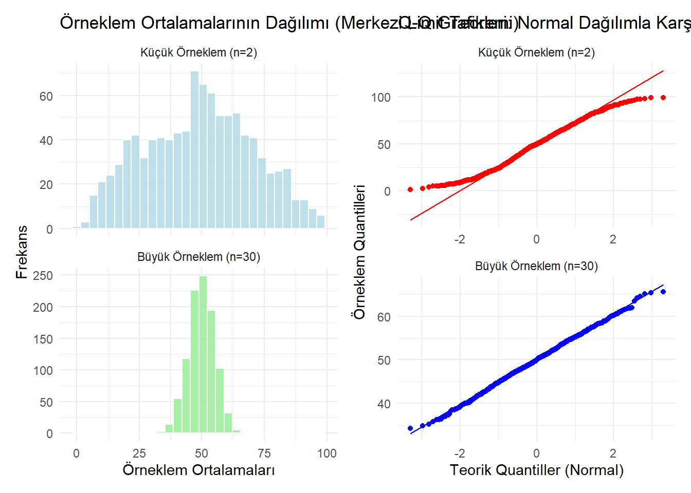
Histogramlar: \(n=2\) olduğunda dağılım hala üçgenimsi (tam normal değil) iken, \(n=30\) olduğunda mükemmel bir çan eğrisi (Normal Dağılım) oluşmuştur.
Q-Q Grafikleri (Quantile-Quantile Plot):
Noktalar düz çizgi (teorik normal) üzerine ne kadar oturursa, verimiz o kadar normal dağılıyor demektir.
\(n=30\) grafiğinde noktaların çizgiye neredeyse yapıştığını görüyoruz. Bu, Merkezi Limit Teoremi’nin çalıştığının kanıtıdır.
3 Araştırmalarda Kullanılan Diğer Dağılımlar
3.1 T Dağılımı (dt)
Ne zaman kullanılır? Popülasyon varyansı bilinmediğinde ve örneklem küçükse (\(n < 30\)).
Özelliği: Normal dağılıma benzer ama “kuyrukları daha kalındır” (Extreme değerlere daha fazla izin verir).
Serbestlik Derecesi (df): Örneklem büyüdükçe (\(df\) arttıkça), T dağılımı Normal dağılıma dönüşür.
library(ggplot2)
# X ekseni aralığını belirlemek için boş bir veri çerçevesi
p <- ggplot(data.frame(x = c(-4, 4)), aes(x = x))
p +
# 1. Normal Dağılım (Kesikli Siyah Çizgi)
stat_function(fun = dnorm,
aes(color = "Normal", linetype = "Normal"),
linewidth = 1) +
# 2. t Dağılımı (df=3) (Düz Kırmızı Çizgi)
stat_function(fun = dt, args = list(df = 3),
aes(color = "t (df=3)", linetype = "t (df=3)"),
linewidth = 1.2) +
# 3. Renk ve Çizgi Tipi Ayarları
scale_color_manual(name = "Dağılım",
values = c("Normal" = "black", "t (df=3)" = "red")) +
scale_linetype_manual(name = "Dağılım",
values = c("Normal" = "dashed", "t (df=3)" = "solid")) +
# 4. Etiketler
labs(title = "Normal Dağılım vs. t Dağılımı",
subtitle = "t dağılımının kuyrukları (uçları) daha kalındır.",
x = "z / t Değerleri",
y = "Yoğunluk") +
theme_minimal()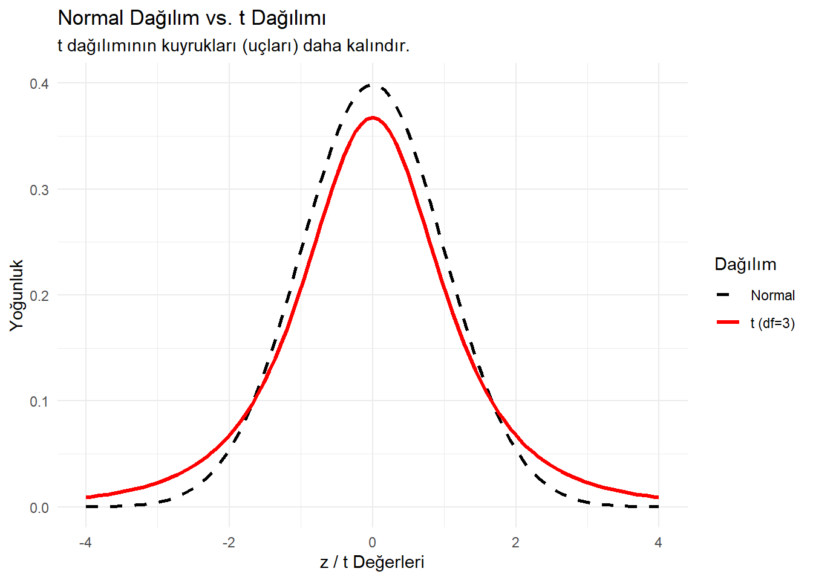
# Renk paleti
renkler <- c("Normal" = "black", "df=1" = "#E74C3C", "df=5" = "#3498DB", "df=30" = "#2ECC71")
ggplot(data.frame(x = c(-4, 4)), aes(x = x)) +
# Normal Dağılım (Referans - Kalın Siyah)
stat_function(fun = dnorm, aes(color = "Normal"),
linetype = "dashed", linewidth = 1.2) +
# t dağılımı: df = 1 (Çok yayvan)
stat_function(fun = dt, args = list(df = 1), aes(color = "df=1"), linewidth = 1) +
# t dağılımı: df = 5
stat_function(fun = dt, args = list(df = 5), aes(color = "df=5"), linewidth = 1) +
# t dağılımı: df = 30 (Neredeyse Normal)
stat_function(fun = dt, args = list(df = 30), aes(color = "df=30"), linewidth = 1) +
# Renk ayarları
scale_color_manual(name = "Dağılımlar", values = renkler) +
labs(title = "Serbestlik Derecesi Arttıkça t Dağılımı",
subtitle = "df=30 olduğunda t dağılımı ile Normal dağılımı ayırt etmek zordur.",
x = "Değerler",
y = "Yoğunluk") +
theme_minimal() +
theme(legend.position = "top")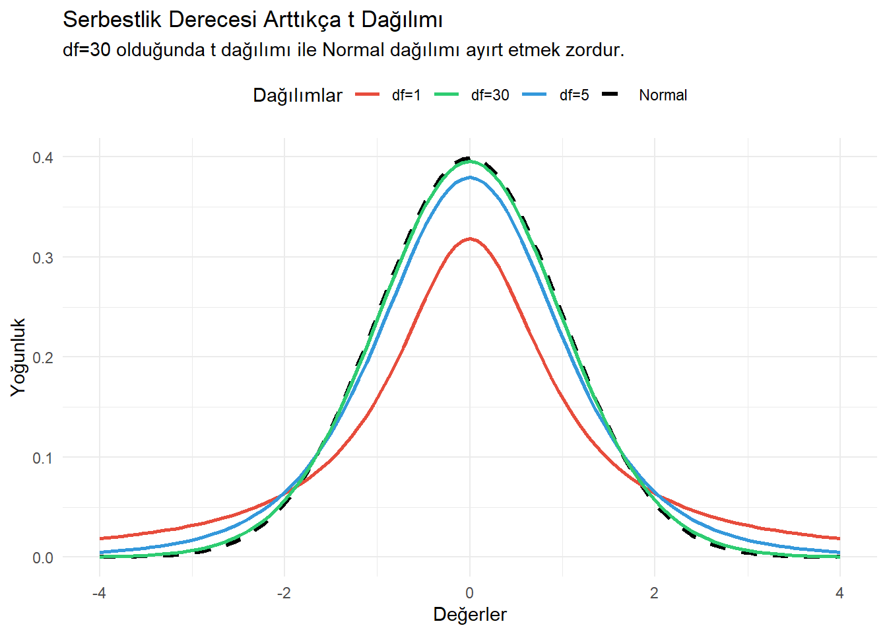
3.2 Poisson Dağılımı (dpois)
- Ne zaman kullanılır? Belirli bir zaman veya mekanda nadir gerçekleşen olayların sayısını modellerken (Örn: Bir saatte çağrı merkezine gelen arama sayısı, bir kitaptaki yazım hatası sayısı).
library(ggplot2)
# 1. Veri Çerçevesi
df_pois <- data.frame(
x = 0:10,
olasilik = dpois(0:10, lambda = 3)
)
# 2. Grafik
ggplot(df_pois, aes(x = x, y = olasilik)) +
# "type = h, lwd = 5" görünümünü taklit etmek için:
# geom_col kullanıyoruz ve width (genişlik) değerini küçültüyoruz (0.2 gibi)
geom_col(fill = "purple", width = 0.2) +
# X ekseninde sadece tam sayıları (0, 1, 2...) göster
scale_x_continuous(breaks = 0:10) +
# Etiketler
labs(title = "Poisson Dağılımı (Lambda = 3)",
subtitle = "Belirli bir aralıkta gerçekleşen nadir olaylar",
x = "Olay Sayısı (k)",
y = "Olasılık") +
theme_minimal()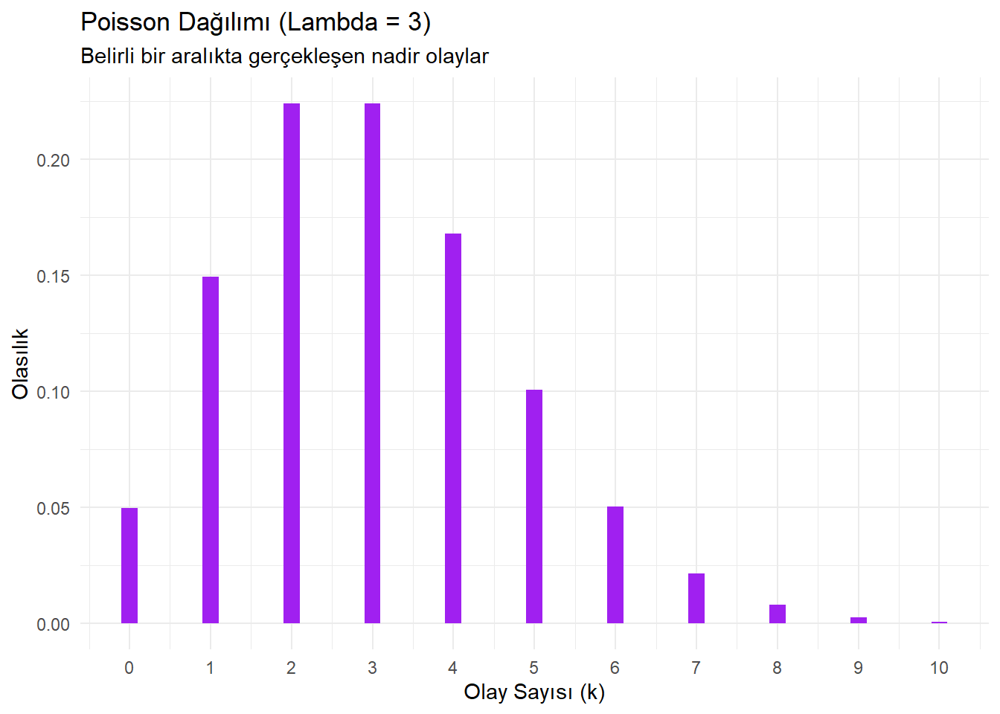
3.3 Ki-Kare Dağılımı (dchisq)
- Ne zaman kullanılır? Genellikle kategorik verilerin analizinde (bağımsızlık testleri) veya varyans analizlerinde kullanılır. Asimetriktir (Sağa çarpık).
# Veri seti oluşturmak (fill/boyama işlemi için daha esnek)
df_chi <- data.frame(x = seq(0, 20, 0.1))
df_chi$y <- dchisq(df_chi$x, df = 5)
ggplot(df_chi, aes(x = x, y = y)) +
# Alanı boya
geom_area(fill = "orange", alpha = 0.4) +
# Çizgiyi ekle
geom_line(color = "orange", linewidth = 1.2) +
labs(title = "Ki-Kare Dağılımı (df=5)",
x = "X Değerleri",
y = "Yoğunluk") +
theme_minimal()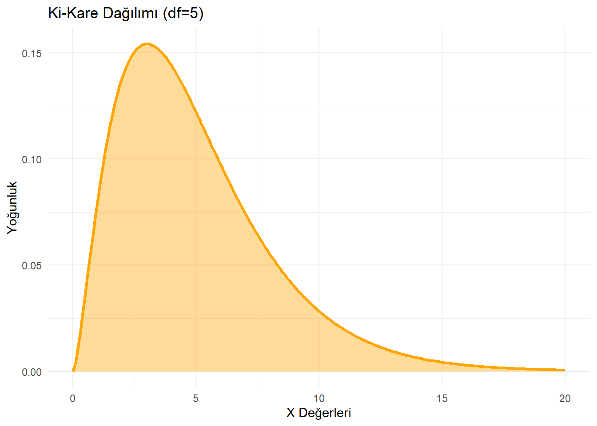
3.4 NOTLAR
Veriyi tanımlamak için Normal Dağılım ve fonksiyonlarını (
d,p,q,r) kullandık.Kesikli olaylar için Binom, nadir olaylar için Poisson dağılımını tanıdık.
Merkezi Limit Teoremi sayesinde, verimiz normal dağılmasa bile, yeterli örneklem büyüklüğünde ortalamalar üzerinden güvenle analiz (T-testi, ANOVA vb.) yapabileceğimizi kanıtladık.
4 İstatistiksel Çıkarım
İstatistiksel çıkarım, belirsizlik altında karar verme sürecidir. Elimizde sınırlı bir parça (örneklem) varken, bütün (evren) hakkında hüküm vermeye çalışırız. Bu süreçte iki temel senaryo ile karşılaşırız.
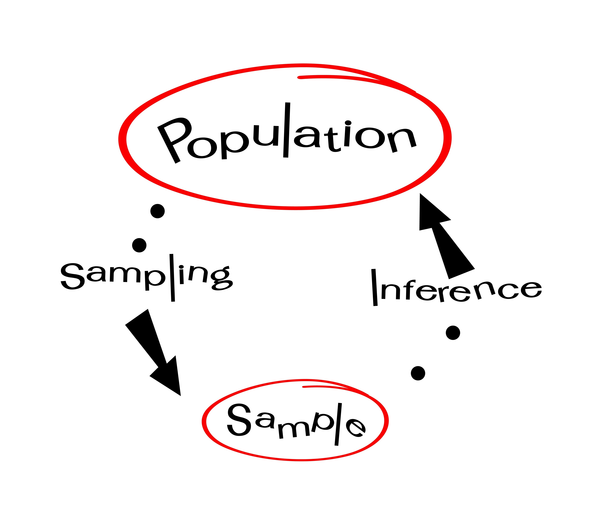
İstatistiksel testlerin çoğu (t-testi, z-testi vb.) aşağıdaki iki durumdan birine yanıt arar.
4.0.1 Durum I: “Bu Örneklem, Bildiğimiz Evrene mi Ait?”
Bu durumda, elimizdeki grubun, özellikleri bilinen bir genel kitleyle uyumlu olup olmadığını test ederiz.
Örnek (Eğitim):
Sorun: 10-A sınıfının matematik ortalaması, tüm okulun ortalamasından anlamlı derecede farklı mı?
Yokluk Hipotezi (\(H_0\)): Fark yoktur. Bu sınıf, okulun sıradan bir parçasıdır (\(\mu_{sınıf} = \mu_{okul}\)).
Alternatif Hipotez (\(H_1\)): Bu sınıfın ortalaması okuldan farklıdır (veya yüksektir).
Karar Mekanizması: Eğer sınıf ortalaması okul ortalamasından çok uzaksa, bunun şans eseri olamayacağına karar veririz.
Örnek (Sağlık):
- Sorun: Bir şehirdeki bireylerin su tüketimi, ülke ortalamasından farklı mı?
4.0.2 Durum II: “Bu İki Örneklem Aynı Evrenden mi Geliyor?”
Bu durum, deneysel çalışmaların temelidir. İki farklı grubun (Deney ve Kontrol) birbirinden farklılaşıp farklılaşmadığına bakarız.
Örnek (Spor Bilimleri):
Sorun: Spor yapanların kilo kaybı ile yapmayanlarınki aynı mı?
Yokluk Hipotezi (\(H_0\)): İki grup arasında fark yoktur (\(\mu_{deney} = \mu_{kontrol}\)). Yani spor programının bir etkisi olmamıştır.
Alternatif Hipotez (\(H_1\)): Spor yapanlar daha fazla kilo vermiştir.
4.1 Hipotez Testinin Altında Yatan Felsefe
İstatistiksel testler, hukuk sistemindeki **Masumiyet Karinesi**ne benzer bir mantıkla çalışır.
Şüphecilik (Yokluk Hipotezi Doğrudur):
Aksi kanıtlanana kadar etkinin olmadığı, farkın şans eseri olduğu varsayılır. Bir ilaç deniyorsak, “İlaç etkisizdir” diyerek başlarız.
Kanıt Ararı (Farkın Büyüklüğü):
Örneklemden elde ettiğimiz sonuç (fark), şansla açıklanamayacak kadar büyük mü?
Fark küçükse \(\rightarrow\) “Bu şans olabilir” deriz (\(H_0\) reddedilemez).
Fark çok büyükse \(\rightarrow\) “Bu kadar büyük bir farkın şans eseri oluşma ihtimali çok düşüktür” deriz (\(H_0\) reddedilir).
Örnekleme Hatası (Sampling Error):
Evrenden rastgele çok sayıda örneklem alsak, hiçbiri tam olarak birbirine veya evren ortalamasına eşit olmaz. Ortalamalar arasında doğal bir “sıçrama” (varyasyon) vardır. Bizim bulduğumuz fark, bu doğal sıçrama aralığında mı, yoksa çok mu uçta?
4.2 Ortalamaların Örneklem Dağılımı (Sampling Distribution)
Bir örneklemden elde edilen sonucun “normal” mi yoksa “sıradışı” mı olduğunu anlamak için, o sonucun ait olduğu dağılımı bilmemiz gerekir.
Merkezi Limit Teoremi bize şunu söyler:
Bir evrenden tekrar tekrar örneklemler alıp ortalamalarını kaydedersek, bu ortalamaların oluşturduğu dağılım:
Normal Dağılım şeklindedir (Çan eğrisi).
Bu dağılımın ortalaması, Gerçek Evren Ortalamasına eşittir.
Standart sapması (yayılımı), örneklem büyüdükçe küçülür. Buna Standart Hata denir.
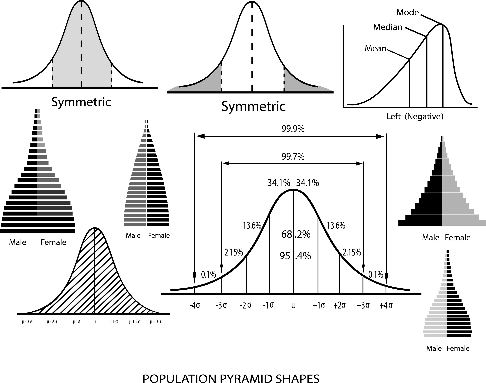
4.2.1 R ile Simülasyon: Ortalamaların Dağılımı
Bu soyut kavramı R ile somutlaştıralım. Normal dağılmayan (Uniform) bir evrenden örneklemler çekelim ve ortalamalarının nasıl Normal Dağılıma dönüştüğünü görelim.
# 1. Evren Oluşturma (Düz/Uniform Dağılım - Normal Değil!)
# 0 ile 100 arasında rastgele 100.000 sayı
evren <- runif(100000, 0, 100)
# Evrenin histogramı (Kutu gibi görünecektir)
hist(evren, main = "Evren Dağılımı (Uniform)", col = "gray")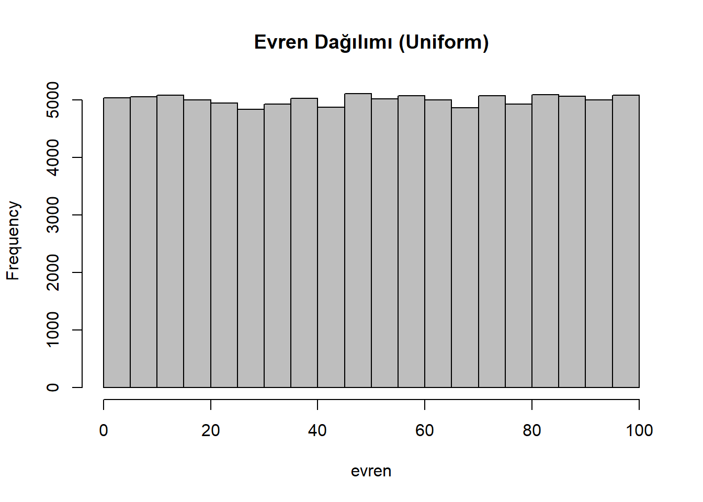
# 2. Örneklem Dağılımı Simülasyonu
# Bu evrenden 30'ar kişilik 1000 tane örneklem çekip ortalamalarını alalım
orneklem_ortalamalari <- replicate(1000, mean(sample(evren, 30)))
# 3. Sonuç: Ortalamaların Histogramı
# Dikkat: Evren düz olmasına rağmen, ortalamalar Çan Eğrisi (Normal) oluşturur!
hist(orneklem_ortalamalari,
main = "Ortalamaların Örneklem Dağılımı (n=30)",
col = "lightblue",
xlab = "Örneklem Ortalamaları")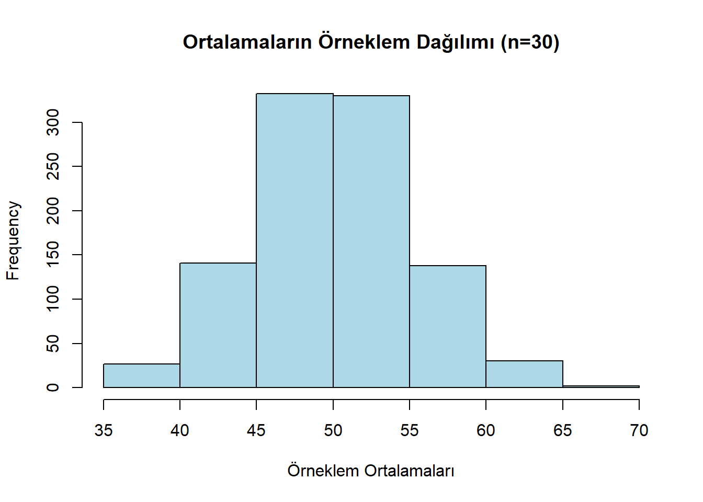
Bu grafik bize standart hatayı (hata payını) gösterir. Eğer bizim araştırmamızdaki ortalama, bu mavi yığının çok dışında kalıyorsa, “Bu sonuç şans eseri olamaz” deriz.
4.3 İstatistiksel Çıkarımda Hata Türleri
Karar verirken (H0’ı Reddet veya Kabul Et), gerçek durumla çelişebiliriz. İki tür hata yapma riskimiz vardır:
4.3.1 Tip I Hata (\(\alpha\) - Yalancı Pozitif)
Durum: Gerçekte bir fark YOKTUR (\(H_0\) Doğru), ama biz yanlışlıkla “Fark Var” (\(H_0\) Red) deriz.
Örnek: İlaç aslında etkisizdir ama şans eseri iyileşen birkaç hastaya bakıp “İlaç işe yarıyor” deriz.
Risk: Bilimsel literatürde en korkulan hatadır. Genellikle %5 (\(\alpha = 0.05\)) olarak sabitlenir.
4.3.2 Tip II Hata (\(\beta\) - Yalancı Negatif)
Durum: Gerçekte bir fark VARDIR (\(H_0\) Yanlış), ama biz “Fark Bulamadık” (\(H_0\) Kabul) deriz.
Örnek: İlaç aslında etkilidir ama örneklemimiz çok küçük olduğu için bu etkiyi yakalayamayız.
4.3.3 Karar Matrisi
| Kararınız ↓ \ Gerçek Durum → | Gerçekte Fark YOK (H0 Doğru) | Gerçekte Fark VAR (H0 Yanlış) |
| “Fark Var” Dediniz (\(H_0\) Red) | Tip I Hata (\(\alpha\))
(Yanlış Alarm) |
Doğru Karar (Güç)
(Tebrikler!) |
| “Fark Yok” Dediniz (\(H_0\) Kabul) | Doğru Karar
(Güvenli Bölge) |
Tip II Hata (\(\beta\))
(Fırsat Kaçırma) |
5 Hipotez Testinin Mantığı
Bilimsel araştırmalarda, evrenin tamamına ulaşamadığımız için örneklemler üzerinden karar verme (inference) süreci yürütürüz. Bu süreç, bir mahkeme yargılamasına benzer.
5.0.1 Mahkeme Analojisi ve Hipotezler
Sıfır Hipotezi (\(H_0\)): “Sanık Suçsuzdur.” (Varsayılan durum, etkinin olmadığı durum).
Alternatif Hipotez (\(H_1\)): “Sanık Suçludur.” (Araştırmacının/Savcının kanıtlamaya çalıştığı durum).
Kanıt (Veri): Örneklemden elde edilen istatistikler.
Bir yargıç (araştırmacı), sanığın masum olduğunu varsayarak başlar. Ancak kanıtlar (veri) o kadar güçlüdür ki, “Masum birinin bu kanıtları oluşturması neredeyse imkansızdır” denirse, masumiyet varsayımı (\(H_0\)) reddedilir.
5.1 Tek Örneklem t-Testi (One Sample t-test)
Bilinen bir evren ortalaması ile elimizdeki örneklem ortalamasını karşılaştırırız.
Senaryo: Literatürde normal popülasyonun kaygı puanı ortalaması \(\mu=50\)’dir. Bizim 100 kişilik örneklemimizin ortalaması bundan farklı mıdır?
# Veri Üretimi
set.seed(123)
veri_tek <- rnorm(100, mean = 52, sd = 5) # Ortalaması 52 olan veri ürettik
# Test
t_test_sonuc <- t.test(veri_tek, mu = 50)
# Sonuç Tablosu
data.frame(
İstatistik = c("t-değeri", "sd", "p-değeri", "Ortalama"),
Değer = c(round(t_test_sonuc$statistic, 3),
t_test_sonuc$parameter,
format.pval(t_test_sonuc$p.value, eps = 0.001),
round(t_test_sonuc$estimate, 2))
) %>%
kable(caption = "Tek Örneklem t-testi Sonuçları") %>%
kable_styling(full_width = F)| İstatistik | Değer | |
|---|---|---|
| t | t-değeri | 5.372 |
| df | sd | 99 |
| p-değeri | < 0.001 | |
| mean of x | Ortalama | 52.45 |
Yorum: \(p < .001\) olduğu için \(H_0\) reddedilir. Örneklem ortalaması (52.45), popülasyon ortalamasından (50) anlamlı derecede yüksektir.
Cohen’s \(d\) için formül:
\[d = \\rac{\bar{x} - \mu}{s}\]
Burada \(s\), örneklemin standart sapmasıdır. Ancak, kod çıktınızda direkt standart sapma değeri yok. Test istatistiği (\(t\)) ve serbestlik derecesi (\(df\)) üzerinden hesaplama yapmak daha pratik olacaktır:
\[d = \frac{t}{\sqrt{n}}\]
- t-değeri: \(3.977\)
- n (Örneklem Büyüklüğü): \(100\)
\[d = \frac{3.977}{\sqrt{100}}\]
\[d = \frac{3.977}{10}\]
\[d = 0.3977\]
5.2 Bağımsız Örneklem t-Testi (Independent Samples t-test)
İki farklı grubun (Örn: Deney vs Kontrol, Kadın vs Erkek) ortalamalarını karşılaştırır.
Senaryo: İki farklı öğretim yöntemi uygulanan sınıfların başarı puanları.
# Veri Üretimi
set.seed(456)
grup_A <- rnorm(50, mean = 75, sd = 10)
grup_B <- rnorm(50, mean = 82, sd = 10) # B grubu daha başarılı
# Veriyi Uzun Formata Çevirme (ggplot için)
df_bagimsiz <- data.frame(
Puan = c(grup_A, grup_B),
Grup = rep(c("Yöntem A", "Yöntem B"), each = 50)
)
# Görselleştirme
ggplot(df_bagimsiz, aes(x = Grup, y = Puan, fill = Grup)) +
geom_boxplot(alpha = 0.6) +
geom_jitter(width = 0.2, alpha = 0.4) +
labs(title = "İki Grubun Karşılaştırılması", y = "Başarı Puanı") +
theme_minimal() +
theme(legend.position = "none")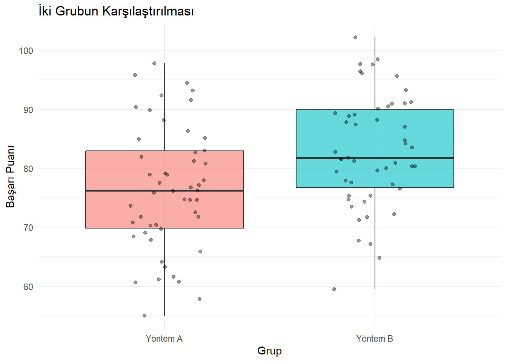
# Test
t.test(Puan ~ Grup, data = df_bagimsiz, var.equal = TRUE)
##
## Two Sample t-test
##
## data: Puan by Grup
## t = -3.2117, df = 98, p-value = 0.001785
## alternative hypothesis: true difference in means between group Yöntem A and group Yöntem B is not equal to 0
## 95 percent confidence interval:
## -10.457757 -2.469918
## sample estimates:
## mean in group Yöntem A mean in group Yöntem B
## 76.47383 82.93767library(rstatix)
## Warning: package 'rstatix' was built under R version 4.4.3
##
## Attaching package: 'rstatix'
## The following object is masked from 'package:stats':
##
## filter
df_bagimsiz %>% cohens_d(Puan ~ Grup,var.equal = TRUE)5.3 Bağımlı Örneklem t-Testi (Paired Samples t-test)
Aynı grubun iki farklı zamandaki (Önce-Sonra) ölçümlerini karşılaştırır.
Senaryo: Bir eğitim programı öncesi ve sonrası başarı puanları.
set.seed(789)
once <- rnorm(30, mean = 70, sd = 10)
# Her öğrenci puanını ortalama 5 puan artırmış olsun (+ hata payı)
sonra <- once + rnorm(30, mean = 5, sd = 5)
# Veri Çerçevesi
df_bagimli <- data.frame(
Ogrenci_ID = factor(rep(1:30, 2)),
Zaman = rep(c("Önce", "Sonra"), each = 30),
Puan = c(once, sonra)
)
# "Spaghetti Plot" (Değişimi Görmek İçin)
ggplot(df_bagimli, aes(x = Zaman, y = Puan, group = Ogrenci_ID)) +
geom_line(color = "gray", alpha = 0.5) + # Bireysel değişimler
geom_point(aes(color = Zaman), size = 3) +
# Ortalama değişimi göstermek için kalın çizgi eklenebilir
stat_summary(aes(group = 1), fun = mean, geom = "line", color = "red", size = 1.5) +
labs(title = "Önce-Sonra Değişimi", subtitle = "Gri çizgiler bireysel değişimi, Kırmızı çizgi ortalamayı gösterir.") +
theme_minimal()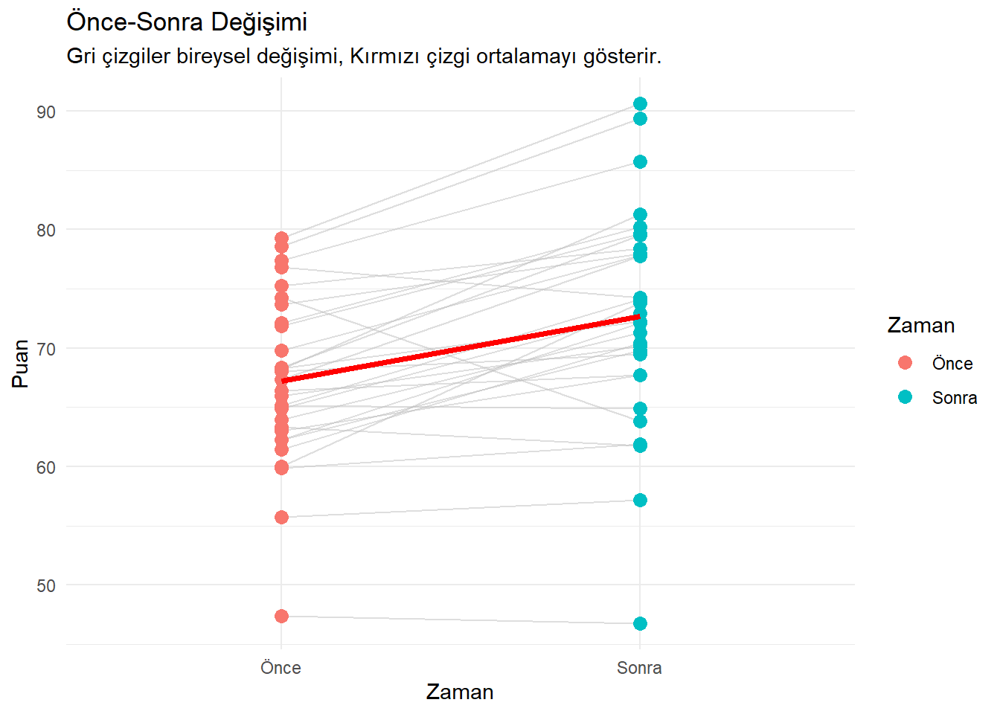
# Test
t.test(once, sonra, paired = TRUE)
##
## Paired t-test
##
## data: once and sonra
## t = -5.5709, df = 29, p-value = 5.199e-06
## alternative hypothesis: true mean difference is not equal to 0
## 95 percent confidence interval:
## -7.505526 -3.474479
## sample estimates:
## mean difference
## -5.490002df_bagimli %>% cohens_d(Puan ~ Zaman,var.equal = TRUE)6 Non-Parametrik Testler
Veriler normal dağılım göstermediğinde t-testlerinin “robust” (dayanıklı) alternatifleri kullanılır.
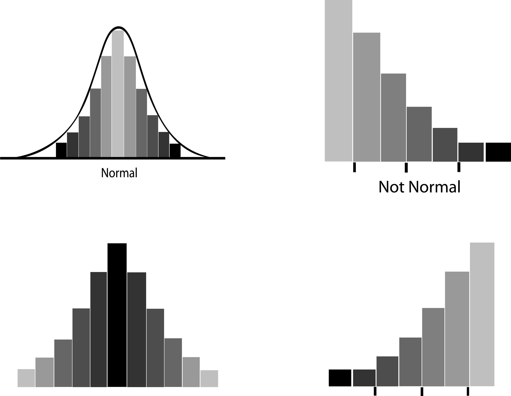
Mann-Whitney U Testi: Bağımsız t-testinin alternatifidir. Ortalamalar yerine “sıra ortalamalarını” (ranks) karşılaştırır.
Wilcoxon İşaretli Sıra Testi: Bağımlı t-testinin alternatifidir.
# Mann-Whitney U Uygulaması
set.seed(101)
# Log-normal dağılım (Sağa çarpık veri)
grup_np1 <- rlnorm(30, meanlog = 1)
grup_np2 <- rlnorm(30, meanlog = 1.5)
wilcox.test(grup_np1, grup_np2)
##
## Wilcoxon rank sum exact test
##
## data: grup_np1 and grup_np2
## W = 319, p-value = 0.05324
## alternative hypothesis: true location shift is not equal to 07 Hata Türleri ve Güç Analizi
Tip I Hata (\(\alpha\), Alfa Seviyesi):
Hikayesi: Masum birini hapsetmek.
Tanımı: \(H_0\) gerçekte doğruyken (fark yokken), bizim onu yanlışlıkla reddetmemizdir (fark bulmamızdır).
Önemi: Bu, bir araştırmacının yanlış bir iddiada bulunmasıdır (örneğin, “Bu ilaç işe yarıyor” demek, halbuki yaramıyor). Toplumda yanlış bilgi yayar.
Kontrol: Tip I hatanın kabul edilebilir en yüksek olasılığıdır. Genellikle \(\alpha = 0.05\) (%5) olarak belirlenir. Bu, 100 hipotez testinden en fazla 5 tanesinde yanılmayı göze aldığımız anlamına gelir.
Tip II Hata (\(\beta\), Beta Seviyesi):
Hikayesi: Suçlu birini serbest bırakmak.
Tanımı: \(H_0\) gerçekte yanlışken (fark varken), bizim onu yanlışlıkla kabul etmemizdir (farkı gözden kaçırmamızdır).
Önemi: Bu, araştırmacının var olan bir etkiyi kaçırmasıdır (örneğin, “Bu ilaç işe yaramıyor” demek, halbuki yarıyor). Potansiyel bir faydayı kaçırır.
Kontrol: Tip I hatadan sonra ikincil olarak kontrol edilir.
7.0.1 Adım 3: İstatistiksel Güç (Power) Kavramı
Güç, Tip II hatanın tam tersidir ve bu tabloda gizlidir.
Güç (Power): \(1 - \beta\)
Tanımı: \(H_A\) gerçekte doğruyken (fark varken), bizim \(H_0\)’ı doğru bir şekilde reddetme olasılığımızdır.
Hikayesi: Gerçekten suçlu olanı doğru bir şekilde mahkum etmek.
Hedef: Gücün yüksek olmasını isteriz (genellikle 0.80 veya %80).
Öğrencinin Aklındaki Soru: Neden %100 değil? Cevap: Çünkü Güç ile Tip I Hata ( \(\alpha\)) arasında takas vardır.
\(\alpha\)’yı (Masumu hapsetme riskini) çok düşürürseniz, \(\beta\) (Suçluyu serbest bırakma riski) artar ve Güç düşer.
Bir araştırmacı olarak, hangi riski daha çok göze aldığınıza karar vermelisiniz. Tıp veya hukuk gibi kritik alanlarda \(\alpha\) daha katı tutulur.
7.0.2 Adım 4: Gücü Etkileyen Faktörler (Nasıl Yüksek Güç Elde Ederiz?)
Güç analizini anlatırken, araştırmacının kontrol edebileceği üç ana faktöre odaklanın. Gücü artırmak, \(\beta\) hatasını azaltmak demektir.
Örneklem Büyüklüğü (\(N\)):
Etki: Gücü Artırmanın En Etkili Yolu.
Analoji: Ne kadar çok veri toplarsan, popülasyon gerçeğini o kadar net görürsün ve doğru karar verme ihtimalin o kadar artar.
Uygulama: Araştırma öncesinde yapılan Güç Analizi, istenen \(\alpha\) ve Güç seviyesine ulaşmak için gerekli minimum \(N\) sayısını bulmayı sağlar.
Etki Büyüklüğü (Effect Size - \(\delta\)):
Etki: Fark ne kadar büyükse, Güç o kadar yüksektir.
Analoji: Bir ilacın etkisi 1 birim mi (küçük), yoksa 100 birim mi (büyük)? 100 birimlik etkiyi bulmak, 1 birimlik etkiyi bulmaktan daha kolaydır.
Anlamlılık Seviyesi (\(\alpha\)):
Etki: \(\alpha\) seviyesini gevşetmek (örneğin, 0.01’den 0.10’a çıkarmak) Gücü artırır.
Ancak: Bu, Tip I Hata riskini artırmak demektir! Bu yüzden \(\alpha\) genellikle sabittir (0.05).
Aşağıdaki grafik iki dağılımı gösterir:
Kırmızı (\(H_0\) Dağılımı): Farkın olmadığı dünya.
Mavi (\(H_1\) Dağılımı): Gerçekten bir farkın/etkinin olduğu dünya.
Kritik değer (kesik çizgi), karar sınırımızdır. Bu sınırın sağına düşersek “Fark Var” deriz.
# Parametreler
mean_h0 <- 80 # H0 ortalaması
mean_h1 <- 90 # H1 ortalaması (Gerçek etki)
sd_val <- 5 # Standart sapma
alpha <- 0.05 # Anlamlılık düzeyi
crit_val <- qnorm(1 - alpha, mean_h0, sd_val) # Kritik Sınır
# Veri Aralığı
x <- seq(60, 110, length.out = 1000)
# Veri Çerçevesi
df_guc <- data.frame(x = x) %>%
mutate(
y_h0 = dnorm(x, mean_h0, sd_val), # H0 Dağılımı
y_h1 = dnorm(x, mean_h1, sd_val) # H1 Dağılımı
)
# Grafik
ggplot(df_guc, aes(x = x)) +
# 1. H0 Dağılımı (Fark Yok)
geom_line(aes(y = y_h0), color = "red", size = 1, linetype = "dashed") +
annotate("text", x = mean_h0, y = 0.09, label = "H0: Etki Yok", color = "red", fontface="bold") +
# 2. H1 Dağılımı (Fark Var)
geom_line(aes(y = y_h1), color = "blue", size = 1) +
annotate("text", x = mean_h1, y = 0.09, label = "H1: Etki Var", color = "blue", fontface="bold") +
# 3. Tip I Hata (Alfa) Alanı - H0 doğrusunun kritik değerden sonraki kuyruğu
geom_area(data = subset(df_guc, x >= crit_val), aes(y = y_h0), fill = "red", alpha = 0.5) +
annotate("text", x = crit_val + 2, y = 0.01, label = "Tip I Hata\n(Alfa)", color = "darkred", size=3) +
# 4. Tip II Hata (Beta) Alanı - H1 doğrusunun kritik değerden önceki kısmı
geom_area(data = subset(df_guc, x <= crit_val), aes(y = y_h1), fill = "blue", alpha = 0.3) +
annotate("text", x = crit_val - 2, y = 0.01, label = "Tip II Hata\n(Beta)", color = "darkblue", size=3) +
# 5. Güç (1-Beta) Alanı - H1 doğrusunun kritik değerden sonraki kısmı
geom_area(data = subset(df_guc, x >= crit_val), aes(y = y_h1), fill = "green", alpha = 0.2) +
annotate("text", x = 95, y = 0.04, label = "GÜÇ\n(Doğru Tespit)", color = "darkgreen", fontface="bold") +
# Kritik Değer Çizgisi
geom_vline(xintercept = crit_val, linetype = "dotted", size = 1.2) +
annotate("text", x = crit_val, y = 0.1, label = paste("Kritik Değer\n", round(crit_val, 2)), vjust = -0.5) +
labs(title = "Hipotez Testlerinde Hata Türleri ve Güç İlişkisi",
subtitle = "Kırmızı: Sıfır Hipotezi | Mavi: Alternatif Hipotez",
x = "Gözlenen Değer (Ortalama)",
y = "Olasılık Yoğunluğu") +
theme_minimal()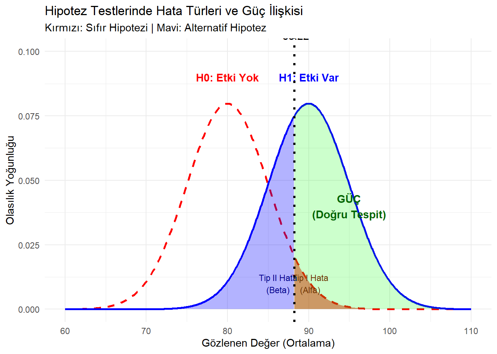
Örneklem sayısını (\(n\)) artırırsak ne olur?
- Dağılımlar daralır (sivrilir), örtüşme azalır. Hem alfa hem beta aynı anda küçülür, Güç artar.
Etki büyüklüğü (Effect Size) artarsa ne olur?
- Mavi tepe (\(H_1\)) sağa kayar. Kırmızıdan uzaklaşır. Örtüşme azalır, Güç artar.
Alfayı 0.05’ten 0.01’e çekersek (Daha katı olursak) ne olur?
Kritik değer çizgisi sağa kayar. Kırmızı alan (Tip I hata) küçülür. ANCAK, Mavi alan (Tip II hata/Beta) büyür ve Güç azalır.
Ders Çıkarımı: Hata türleri arasında bir takas (trade-off) vardır. Birini azaltmak diğerini artırır.
7.0.3 Kaynak
İlhan, M. (2016). Sezgi Yoluyla İstatistiksel Çıkarım. N. Güler (Ed.), Sosyal Bilimler için İstatistik içinde (223-243). Ankara: Pegem Akademi